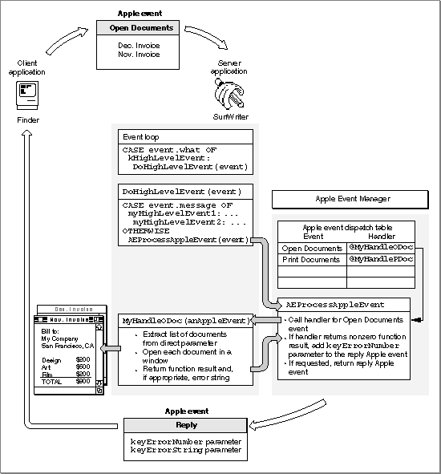

Legacy Document
Important: The information in this document is obsolete and should not be used for new development.
Important: The information in this document is obsolete and should not be used for new development.


About Apple Event Handlers
Your Apple event handlers must generally perform the following tasks:
This section describes how your application's Apple event handlers can use the Apple Event Manager to accomplish some of these tasks. The chapter "Responding to Apple Events" in this book provides detailed information about handling Apple events and interacting with the user.
- extract the parameters and attributes from the Apple event
- check that all the required parameters have been extracted
- locate any Apple event objects specified by object specifier records in the Apple event parameters
- if your application needs to interact with the user, use the
AEInteractWithUserfunction to bring it to the foreground- perform the action requested by the Apple event
- dispose of any copies of descriptor records that have been created
- add information to the reply Apple event if requested
Extracting and Checking Data
You must use Apple Event Manager functions to extract the data from Apple events. You can also use Apple Event Manager functions to extract data from descriptor records, descriptor lists, and AE records. Most of these routines are available in two forms: they either return a copy of the data in a buffer or return a copy of the descriptor record for the data, including a copy of the data.The following list shows the main functions you can use to access the data of an Apple event:
Function Description AEGetParamPtr Uses a buffer to return a copy of the data contained in an Apple event parameter. Usually used to extract data of fixed length or known maximum length; for example, to extract the result code from the keyErrorNumberparameter of a reply Apple event.AEGetParamDesc Returns a copy of the descriptor record or descriptor list for an Apple event parameter. Usually used to extract data of variable length; for example, to extract the descriptor list for a list of alias records specified in the direct parameter of the Open Documents event. AEGetAttributePtr Uses a buffer to return a copy of the data contained in an Apple event attribute. Used to extract data of fixed length or known maximum length; for example, to determine the source of an Apple event by extracting the data from the keyEventSourceAttrattribute.AEGetAttributeDesc Returns a copy of the descriptor record for an attribute. Used to extract data of variable length; for example, to make a copy of a descriptor record containing the address of an application. AECountItems Returns the number of descriptor records in a descriptor list. Used, for example, to determine the number of alias records for documents specified in the direct parameter of the
Open Documents event.AEGetNthPtr Uses a buffer to return a copy of the data for a descriptor record contained in a descriptor list. Used to extract data of fixed length or known maximum length; for example, to extract the name and location of a document from the descriptor list specified in the direct parameter of the
Open Documents event.AEGetNthDesc Returns a copy of a descriptor record from a descriptor list. Used to extract data of variable length; for example, to get the descriptor record containing an alias record from the list specified in the direct parameter of the Open Documents event. You can specify the descriptor type of the resulting data for these functions; if this type is different from the descriptor type of the attribute or parameter, the Apple Event Manager attempts to coerce it to the specified type. In the direct parameter of the Open Documents event, for example, each descriptor record in the descriptor list is an alias record; each alias record specifies a document to be opened. As explained in the chapter "Introduction to File Management" of Inside Macintosh: Files, all your application usually needs is the file system specification (
FSSpec) record of the document. When you extract the descriptor record from the descriptor list, you can request that the Apple Event Manager return the data to your application as a file system specification record instead of an alias record.After extracting all known Apple event parameters, your handler should check that it retrieved all the parameters that the source application considered to be required. To do so, determine whether the
keyMissedKeywordAttrattribute exists. If so, your handler has not retrieved all the required parameters, and it should return an error.Although the Apple Event Registry: Standard Suites defines Apple event parameters as either required or optional, the Apple Event Manager does not enforce the definitions of required and optional events. Instead, the source application specifies, when it sends the event, which Apple event parameters the target can treat as if they were optional. For more information about optional parameters, see "Specifying Optional Parameters for an Apple Event," which begins on page 5-7.
If any of the Apple event parameters include object specifier records, your handler should use the
AEResolvefunction, other Apple Event Manager routines, and your own application-defined functions to locate the corresponding Apple event objects. For more information about locating Apple event objects, see "Working With Object Specifier Records," which begins on page 3-27.Interacting With the User
In some cases, the server may need to interact with the user when it handles an Apple event. For example, your handler for the Print Documents event may need to display a print options dialog box and get settings from the user before printing. By specifying flags to theAESetInteractionAllowedfunction, you can set preferences to allow user interaction with your application (a) only when your application is sending the Apple event to itself, (b) only when the client application is on the same computer as your application, or (c) for any event sent by any client application on any computer. In addition, your handler should always use theAEInteractWithUserfunction before displaying a dialog box or alert box or otherwise interacting with the user. TheAEInteractWithUserfunction determines whether user interaction can occur and takes appropriate action depending on the circumstances.Both the client and server specify their preferences for user interaction: the client specifies whether the server should be allowed to interact with the user, and the server specifies when it allows user interaction while processing an Apple event. The Apple Event Manager does not allow a server application to interact with the user in response to a client application's Apple event unless at least two conditions are met: First, the client application must set flags in the
sendModeparameter of theAESendfunction indicating that user interaction is allowed. Second, the server application must either set no user interaction preferences, in which caseAEInteractWithUserassumes that only interaction with a client on the local computer is allowed; or it must set flags to theAESetInteractionAllowedfunction indicating that user interaction is allowed.If these two conditions are met and if
AEInteractWithUserdetermines that both the client and server applications allow user interaction under the current circumstances,AEInteractWithUserbrings your application to the foreground if it isn't already in the foreground. Your application can then display its dialog box or alert box or otherwise interact with the user. TheAEInteractWithUserfunction brings your server application to the front either directly or after the user responds to a notification request.For detailed information about how to specify flags to the
AESetInteractionAllowedfunction and how the Apple Event Manager determines whether user interaction is allowed, see the section
"Interacting With the User," which begins on page 4-45.Performing the Requested Action and Returning a Result
When your application responds to an Apple event, it should perform the standard action requested by that event. For example, your application should respond to the Open Documents event by opening the specified documents in titled windows just as if the user had selected each document from the Finder and then chosen Open from the File menu.Many Apple events can ask your application to return data. For instance, if your application is a spelling checker, the client application might expect your application to return data in the form of a list of misspelled words. Figure 3-14 on page 3-32 shows a similar example: a Get Data event that asks the server application to locate a specific Apple event object and return the data associated with it.
If the client application requests a reply, the Apple Event Manager prepares a reply Apple event by passing a default reply Apple event to your handler. If the client application does not request a reply, the Apple Event Manager passes a null descriptor record--that is, a descriptor record of type
typeNullwhose data handle has the valueNIL--to your handler instead of a default reply Apple event. The default reply Apple event has no parameters when it is passed to your handler, but your handler can add parameters to it. If your application is a spelling checker, for example, you can return a list of misspelled words in a parameter. However, your handler should check whether the reply Apple event exists before attempting to add any attributes or parameters to it. Any attempt to add an Apple event attribute or parameter to a null descriptor record generates an error.When you extract a descriptor record using the
AEGetParamDesc,AEGetAttributeDesc,AEGetNthDesc, orAEGetKeyDescfunction, the Apple Event Manager creates a copy of the descriptor record for you to use. When your handler is finished using a copy of a descriptor record, you should dispose of it--and thereby deallocate the memory used by its data--by calling theAEDisposeDescfunction.
Your Apple event handler should always set its function result either to
- Note
- Outputs from functions such as
AEGetKeyPtrand other routines whose names end in-Ptruse a buffer rather than a descriptor record to return data. Because these functions don't require the use ofAEDisposeDesc, it is preferable to use them for any data that is not identified by a handle.
noErrif it successfully handles the Apple event or to a nonzero result code if an error occurs. If your handler returns a nonzero result code, the Apple Event Manager adds akeyErrorNumberparameter to the reply Apple event (unless you have already added akeyErrorNumberparameter). This parameter contains the result code that your handler returns. The client should check whether thekeyErrorNumberparameter exists to determine whether your handler performed the requested action. In addition to returning a result code, your handler can also return an error string in thekeyErrorStringparameter of the reply Apple event. The client can use this string in an error message to the user.If the client application requested a reply, the Apple Event Manager returns the reply Apple event, which is identified by the event class
kCoreEventClassand by the event IDkAEAnswer. When the client has finished using the reply Apple event, it should dispose of both the reply event and the original event--and thereby deallocate the memory they use--by calling theAEDisposeDescfunction. The Apple Event Manager takes care of disposing both the Apple event and the reply Apple event after a server application's handler returns toAEProcessAppleEvent, but a server application is responsible for disposing of any Apple event data structures it creates while extracting data from the Apple event.Figure 3-12 shows the entire process of responding to an Apple event.
Figure 3-12 Responding to an Open Documents event

When your handler returns a result code to the Apple Event Manager, you have finished your response to the client application's Apple event.